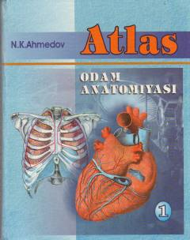

OAInson anatomiyasi bo'yicha suyaklar, muskullar va ichki a'zolarga bag'ishlangan birinchi jildli atlas.
Ushbu atlas inson anatomiyasining asosiy qismlarini, jumladan suyaklar, ularning o'zaro birlashuvi, muskullar va ichki a'zolarni o'z ichiga oladi. Kitob tibbiyot yo'nalishidagi o'quv yurtlari o'quvchilari va talabalari uchun mo'ljallangan bo'lib, lotincha anatomik terminlar bilan boyitilgan. Asar o'zbek tilida yaratilgan ilk fundamental anatomik atlaslardan biridir.